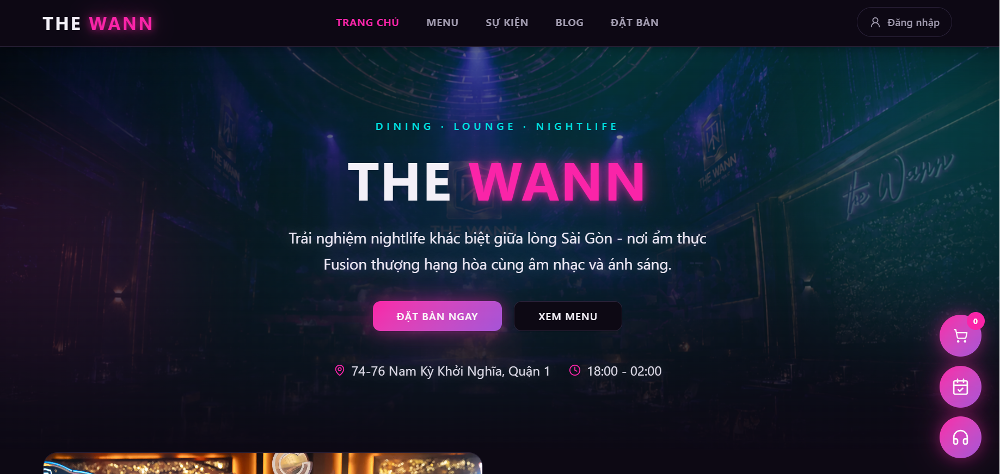
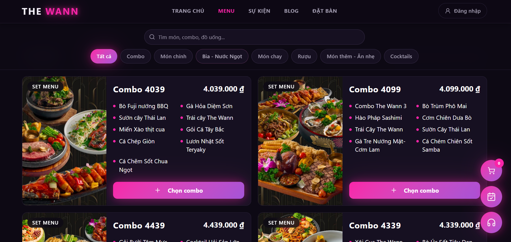
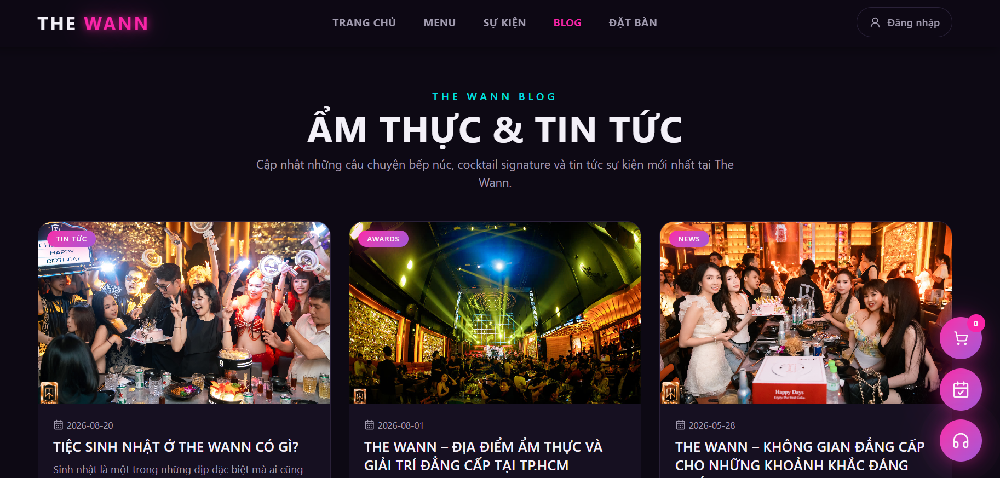

Thiết kế UI/UX
Sắp xếp luồng nội dung, hero, menu, sự kiện và đặt bàn để website vừa có không khí thương hiệu vừa dễ sử dụng.
The Wann là một website thực tế cho dining, lounge và nightlife. Mình phụ trách trọn dự án từ thiết kế giao diện, code frontend responsive đến deploy website live.

Tổng quan dự án
The Wann mang đến trải nghiệm dining & lounge cao cấp tại Quận 1. Trong dự án này, mình đảm nhận toàn bộ quá trình từ định hướng giao diện, xây dựng layout responsive, code frontend, tối ưu nội dung hiển thị đến deploy website live để người dùng có thể truy cập thực tế.
Phạm vi
Hình ảnh website



Đóng góp của mình
Sắp xếp luồng nội dung, hero, menu, sự kiện và đặt bàn để website vừa có không khí thương hiệu vừa dễ sử dụng.
Xây dựng giao diện responsive, đảm bảo bố cục, typography, màu sắc và các trạng thái hiển thị ổn trên nhiều kích thước màn hình.
Hoàn thiện và triển khai website live để dự án có thể truy cập công khai, dễ chia sẻ và sử dụng thực tế.
Tư duy frontend
Định hướng giao diện hỗ trợ thương hiệu nightlife giàu năng lượng, đồng thời giữ thao tác xem menu và đặt bàn rõ ràng.
Nhìn lại dự án
Dự án này là một website thực tế trong portfolio của mình: mình tự thiết kế, code và deploy live, đồng thời xử lý storytelling sự kiện, bố cục responsive và luồng đặt bàn rõ ràng.